Обзор
В этом уроке объясняется, как настроить окружающие звуки в CRYENGINE.
Окружающие звуки на уровнях
CRYENGINE предлагает два аудиообъекта; AudioAreaAmbience и AudioAreaEntity. Оба могут использоваться для настройки окружающих звуков на уровне, но их необходимо прикрепить к форме области, рамке области, сфере сфере или телу области на уровне, чтобы определить область, в которой будет воспроизводиться звук.
Эти объекты используются для установки нескольких атрибутов, которые позволяют вам определить Play и StopTrigger, среду, а также радиус вокруг формы, где ваша атмосфера начнет проявляться.
Чтобы воспользоваться AudioAreaAmbience или AudioAreaEntity на уровне сначала необходимо создать новую фигуру. Формы, которые можно использовать с AudioAreaAmbience и AudioAreaEntity можно найти в Создать объект инструмент под Площадь. Выберите либо Коробка, Сфера, Форма или Твердый.
В этом уроке мы собираемся разместить на уровне фигуру области. Для этого зайдите в Создать объект инструмент и выберите Площадь -> Форма:
После Форма выбран, щелкните в окне просмотра «Перспектива», чтобы создать точки, которые станут углами вашей фигуры.
Когда вы выбрали положение последней точки вашей фигуры, нажмите double. Это завершает созданную вами форму.
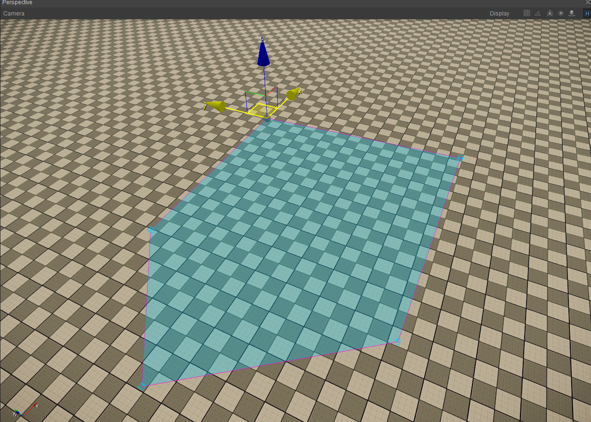
Если вы перейдете к свойствам фигуры области, вы можете дать ей имя и высоту:
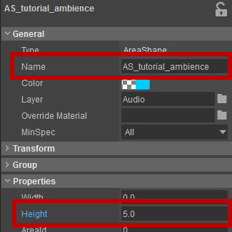
Использование AudioAreaAmbience
AudioAreaAmbience Сущность — это основная сущность, которая позволяет реализовать атмосферу на уровне. Он используется, когда вы настраиваете окружение без необходимости доступа к его информации в Flow Graph для расширенных методов реализации.
Для того, чтобы подключить AudioAreaAmbience, выберите ранее созданную фигуру, затем нажмите кнопку Цели кнопка в Операторы раздел, добавьте цель, выберите пустое поле и выберите AudioAreaAmbience ентити на вашем уровне.
AudioAreaAmbience сущность теперь будет связана с фигурой.
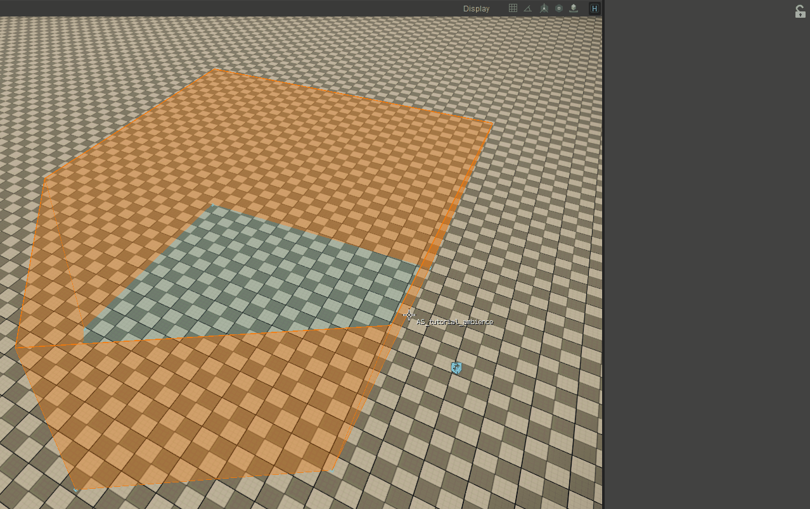
Для параметра PlayTrigger выберите триггер аудиосистемы для окружающего звука. Для опции Rtpc настройте параметр аудиосистемы, который управляет громкостью звука.
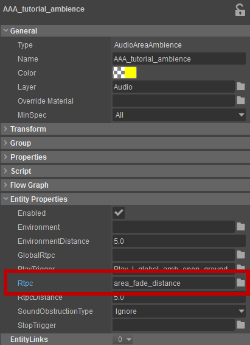
Для получения полной информации о свойствах AudioAreaAmbience Объект, пожалуйста, обратитесь к Аудиообъекты и Fllownodes — AudioAreaAmbience.
Вы можете выбрать/использовать любое имя для аудиосистемы RTPC, которое установлено как RTPC в свойствах объекта. AudioAreaAmbience и AudioAreaEntity. В CRYENGINE мы используем имя «area_fade_distance».
Если ваш персонаж движется к Зоне на уровне, то PlayTrigger будет вызван, как только персонаж пройдет максимальное расстояние, определенное значением RtpcDistance в свойствах объекта.
При приближении к форме значение RtpcDistance увеличивается и приближается к 1, следовательно, это увеличивает громкость окружения в соответствии с настройками вашего промежуточного программного обеспечения для звука.
Поскольку long ваш персонаж находится в пределах формы области, значение RtpcDistance равно 1, и поэтому ваша атмосфера будет воспроизводиться без затухания.
Расстояние, которое выдает AudioAreaAmbience и AudioAreaEntity всегда масштабируется в диапазоне от 0 до 1 от максимального диапазона, заданного вами в RTPC Distance. Следовательно, диапазон RTPC, используемый вашим промежуточным программным обеспечением, также должен быть нормализован от 0 до 1.
Последнее обновление CRYENGINE 5.3.1 включает новый параметр. Внутреннее расстояние затухания под следующими объектами в объекте Area:
- Твердый
- Коробка
- Сфера
- Форма
Это значение (указанное в метрах) определяет, насколько звук окружения может сливаться с формой с более высоким приоритетом.
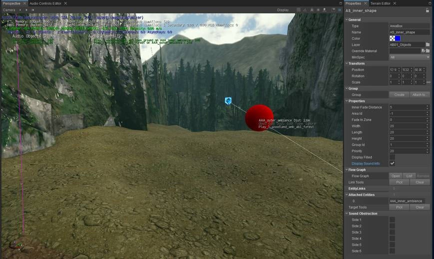
Ранее это значение определялось исходя из наибольшего RTPC Расстояние значение, указанное в объектах Audio, таких как Звуковая зона, Объект аудиообласти и Ааудио область случайная которые прикреплены к внутренней области, куда входит слушатель. Это не позволяло определять отдельные спады для фигуры с прикрепленными к ней несколькими объектами, такими как Audio Area Ambience и Audio Area Random.
Кроме того, это также может вызвать путаницу, поскольку один и тот же параметр служит разным целям в зависимости от того, имеет ли прикрепленная фигура более высокое или низкое значение приоритета.
Теперь Расстояние RTPC в сущности Audio задает спад наружу, а Внутреннее расстояние затухания в области тела, области прямоугольника, области сферы или формы области задает скат внутрь.
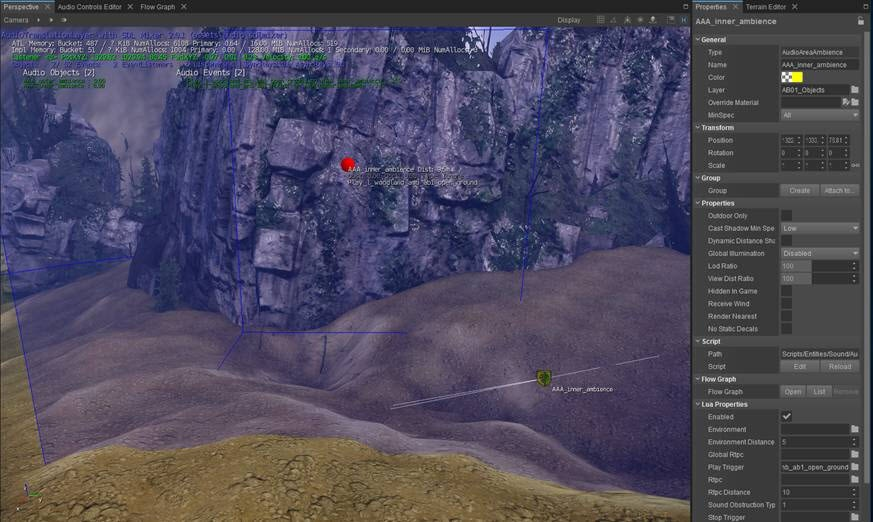
Использование AudioAreaEntity
AudioAreaEntity работает аналогично AudioAreaAmbience, но требует ручной настройки через Flow Graph для запуска элементов управления аудиосистемой.
Этот дополнительный шаг дает вам доступ к множеству параметров и более расширенным возможностям настройки, чем при AudioAreaAmbience.
Если посмотреть на свойства AudioAreaEntity вы заметите, что он не содержит RtpcDistance, но включает параметр FadeDistance. Это значение ведет себя так же, как и в AudioAreaAmbience, но называется по-другому, так как его можно подключить к любому Объекту через Flow Graph, а не только к элементу управления аудиосистемой RTPC.
Вы также заметите, что в свойствах объекта нет триггеров воспроизведения и остановки, это связано с тем, что они настраиваются вручную в Flow Graph — это объясняется в следующем шаге.
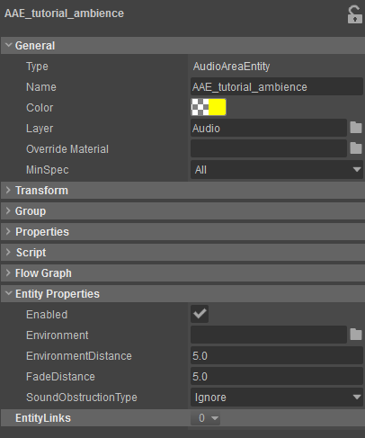
Для получения полной информации о свойствах AudioAreaEntity пожалуйста обратитесь к Аудиообъекты и Fllownodes.
Для того, чтобы настроить AudioAreaEntity на уровне сначала выполните те же шаги, что и с AudioAreaAmbience т. е. разместив Сущность на своем уровне и соединив ее с фигурой области.
Добавление Flownode для выбранной сущности 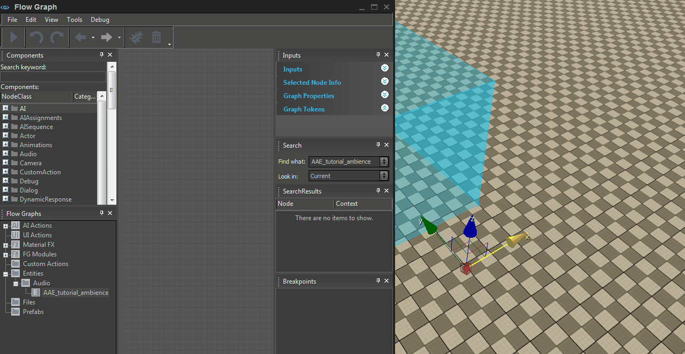
Полезно объединить все звуковые функции в одном Flow Graph. Также хорошей практикой является размещение объекта Flow Graph в вашем аудиослое и создание внутри него всего звука, специфичного для Flow Graph.
Для этого добавьте объект Flow Graph, который можно найти в Инструмент «Создать объект» под Сущность -> По умолчанию -> FlowgraphEntity и создайте Flow Graph на объекте, который будут использовать все ваши аудиообъекты.
Теперь нам нужно добавить AudioAreaEntity на уровень, открыв Создать объект инструмент, собираюсь Аудио -> Объект аудиообласти. и перетащите его на сцену. Далее внутри Flow Graph, щелкаем правой кнопкой мыши и выбираем Добавить выбранный объект чтобы добавить объект аудиообласти на график.
AudioAreaEntity Узел Flow Graph сам по себе не имеет никаких функций воспроизведения. Он выводит триггеры, когда персонаж входит или покидает подключенную Область, или по ее внешним значениям, определенным EventDistance. Он также отправляет значение, которое можно использовать для управления любой аудиосистемой RTPC через Аудио: RTPC узел.
Поэтому, чтобы включить воспроизведение атмосферы для вашей Зоны с помощью AudioAreaEntity вам необходимо добавить узлы Audio:Trigger и Audio:RTPC в Flow Graph.
После добавления Аудио: триггер и Аудио: RTPC узел к Flow Graph, щелкните его правой кнопкой мыши и выберите Назначить выбранный объект из меню (в данном примере AudioAreaEntity1). Теперь оба Аудио: триггер и Аудио: RTPC узлам будет присвоен назначенный им объект, который в данном случае AudioAreaEntity1.
Дважды щелкните значок Имя введите на узле Rtpc и выберите area_fade_distance Rtpc:
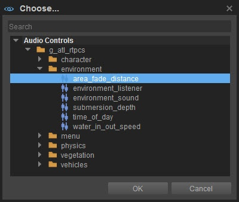
Значение для узла Rtpc берется из свойства Entities 5 (метры) и передается в узел Audio:Rtpc из AudioAreaEntity. FadeValue выход. Затем громкость звука будет увеличиваться, пока не будет достигнут край формы.
Узлу Audio:Trigger также потребуется звук, назначенный PlayTrigger. Это делается так же, как мы назначили area_fade_distance Rtpc выше: нажав double на PlayTrigger и выбрав звук, например Play_l_global_sfx_waterfall_large_loop.
После этого нам просто нужно соединить узлы, как показано ниже, и Flow Graph должен работать:
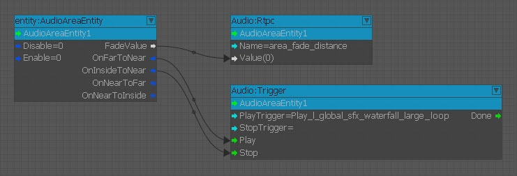
Заходите в игру и убедитесь в этом!
Вам не нужно указывать StopTrigger, поскольку CRYENGINE автоматически останавливает воспроизведение триггера аудиосистемы, если не назначено событие остановки.
В случае настройки атмосферы StopTrigger вызывается при выходе из максимума RtpcDistance/FadeDistance.
В редакторе окружения, настроенные с помощью AudioAreaEntity не будут воспроизводиться по умолчанию, поскольку они активируют элементы управления аудиосистемой в Flow Graph.
Для предварительного просмотра AudioAreaEntity когда вы не в игре, вам нужно включить кнопку AI/Физика, чтобы вычислялся Flow Graph.
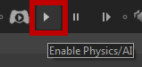
Работа с приоритетами фигур и вложением фигур
Когда вы используете несколько фигур на уровне, вы можете настроить GroupIds и приоритеты фигур, чтобы определить, как будет вести себя звук при переходе от одной фигуры к другой.
Вы можете установить GroupId и приоритет каждой фигуры в свойствах:
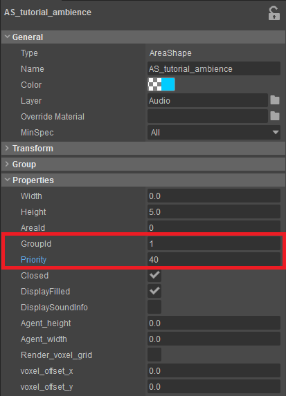
Если фигуры имеют одинаковый GroupId, фигура с более высоким приоритетом будет override RtpcDistance/FadeDistance который установлен на AudioAreaAmbience/AudioAreaEntity формы с более низким приоритетом.
Пример
Форма А имеет GroupId из 1, Приоритет 20 и FadeDistance 10, тогда как форма B имеет GroupId из 1, Приоритет 40 и FadeDistance из 5. Форма B вложена в форму A.
Пример фигур с одинаковым GroupId, но разным приоритетом и FadeDistance 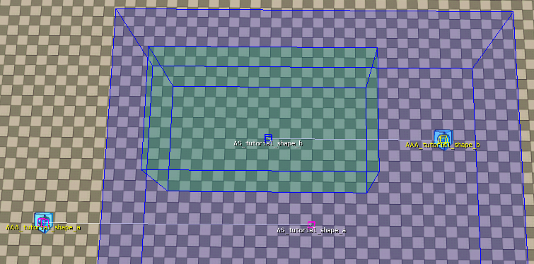
- Когда игрок приближается к Форме А, за 10 м до края Формы звук начинает затухать.
- Когда игрок приближается к Форме Б, за 5 м до края Формы звук начинает затухать.
- Когда игрок входит в Форму Б, звук Формы А затихает в радиусе 5 метров.
С Помощники включен и нажмите кнопку Пробел на вашей клавиатуре отобразятся опорные точки всех объектов на вашем уровне. Эта функция также позволяет вам легче выбирать области, когда они вложены вместе.
Использование звуковых препятствий на площадях
Стороны фигуры области и рамки области можно пометить как препятствия, установив флажок DisplaySoundInfo.
Закрытые стороны отображаются красным цветом и нет рассчитать обновления атмосферы для этого сегмента.
Свободные стороны отображаются зеленым и делать рассчитать обновления атмосферы для этого сегмента.
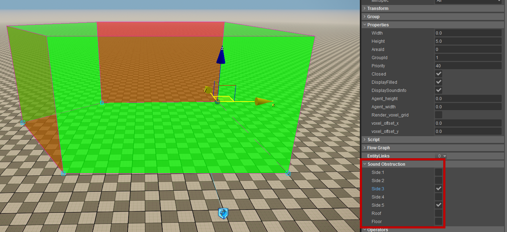
Эту функцию можно использовать для определения дверных проемов и окон, а также обеспечить большую гибкость при настройке сложных форм.